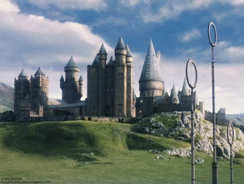
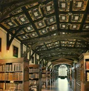

Vida en la Escuela

campo de quidditch
el lugar donde se desarrollo el Torneo de los Tres Magos.
El campo de Quidditch de Hogwarts. Se usa para que los equipos de quidditch practiquen y jueguen partidos entre las casas para competir por la Copa de la Casa.

la biblioteca
contiene decenas de miles de libros en cientos de estanterías.
La Biblioteca está ubicada en el cuarto piso de Hogwarts. Dirigida por Irma Pince, la biblioteca es donde los estudiantes pueden ir a buscar libros y usarlos como apoyo en sus estudios (o en disfrute personal). La biblioteca cierra a las 20:00 hrs.

el gran comedor
es el lugar donde todos los alumnos del Colegio Hogwarts de Magia y Hechicería se reúnen para comer.
Es una sala enorme que con un hechizo consigue que su techo muestre el cielo que haya en el exterior en ese momento. Se divide en cinco mesas: cada casa tiene una, más la de los profesores también le adornan velas que levitan, y en Halloween estas se cambian por calabazas..